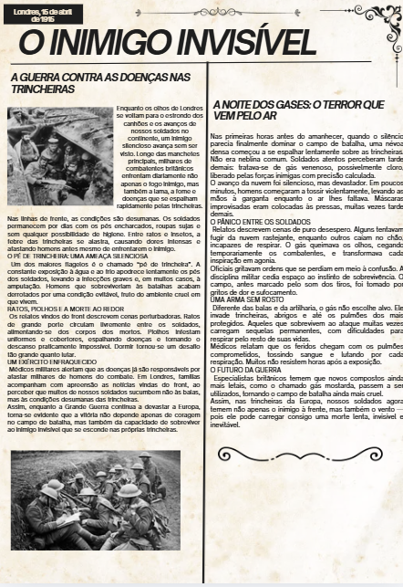
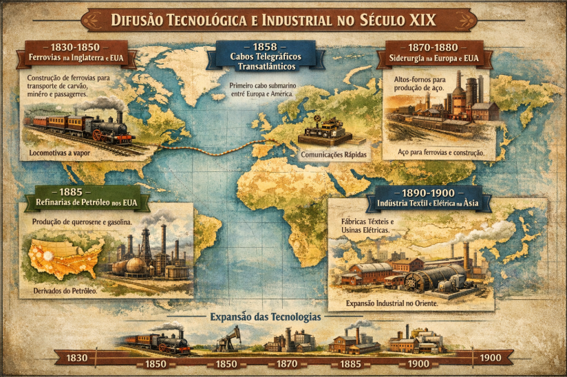

HUMANAS
ATIVIDADES

Abrir Jornal no Canva ↗Criação de Jornal de Época
C3, H15, H16, H20, C6, H39
Produzir uma capa de jornal de época sobre a Grande Guerra e Revolução Russa utilizando fontes históricas.
Criação de matérias contextualizando aspectos políticos, econômicos e culturais entre 1900 e 1920 com design inspirado no início do século XX.
"A atividade permitiu unir criatividade, pesquisa histórica e análise crítica. Produzir o jornal estimulou habilidades de produção textual e planejamento visual."

Introdução à Geopolítica – 2026
C1, H1, H2, H3, H4, H5
Iniciar o estudo de geopolítica de forma interativa através de jogos e pesquisa sobre diferentes nações.
Uso de jogos como Worldle para localização geográfica e criação de apresentações comparativas entre realidades de diferentes países.
"A atividade foi dinâmica e envolvente. Os jogos iniciais tornaram o estudo mais acessível e a pesquisa promoveu uma visão ampla do mundo contemporâneo."

Abrir Linha do Tempo Canva ↗Tecnologias da 2ª Revolução Industrial
H1, H2, H5
Compreender a difusão tecnológica e industrial na 2ª metade do século XIX e seus impactos geopolíticos.
Desenvolvimento de uma linha do tempo indicando ferrovias, telégrafos e indústrias, relacionando-as com o neocolonialismo e a paz armada.
"A atividade é muito interessante para visualizar a expansão industrial de forma contextualizada, facilitando a análise dos impactos sociais e políticos."